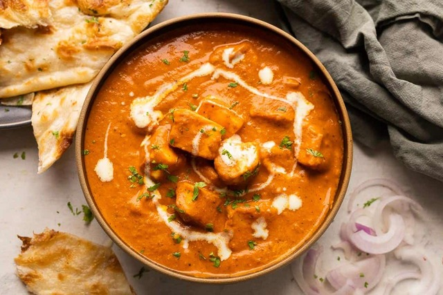

Spicy Paneer butter masala

Creamy Restaurant style Paneer Butter Masala is easy to make at home. This creamy curry is made with onion,
tomatoes, cashews, cream and butter (of course!).
It has a mild sweet taste and pairs beautifully with garlic naan or jeera rice.
This Paneer Butter Masala recipe is a rich and creamy dish of paneer (Indian cottage cheese) in a tomato, butter
and cashew sauce that is known here as “makhani gravy”.
Ingredients
- 1 tbsp Oil
- 1 cup Paneer cubes
- 2 cubes Butter
- 1 tsp Ginger
- 1 tsp Garlic
- 1/2 cup chopped Onion
- 1 cup chopped Tomato
- 7-8 nos Cashews
- 1/4 tsp chopped Green chilli
- 2 tsp Salt
- 1 tsp Red chilli powder
- 1/2 tsp Coriander powder
- 1/2 tsp Cumin powder
- 1/4 tsp Garam masala
- 3/4 cup Milk
- 1 tbsp Cream1
- 2 tsp Cardamom powder
Steps
- Heat oil in a pan.
- Put paneer cubes to it. Add salt and red chilli powder to it.
- Pan fry the paneer cubes.
- Heat oil in a pan again. Add butter.
- Stir a little and then add ginger and garlic.
- Put chopped onion and tomato. Mix again.
- Add Green chillies to the mixture.
- Add hot butter to the puree.
- Add salt, red chilli powder, coriander powder, cumin powder, garam masala. Mix well.
- Add fried paneer cubes to the simmering gravy. Mix well.
- Now add milk and mix thoroughly.
- Let it come to simmer and then add cream.Mix well.
- Serve Hot.
Back to Homepage